机器学习
Chapter 1 绪论
机器学习课程笔记，主要用于记录查阅，参考《机器学习》by周志华
ps：本篇用"模型"泛指从数据中学得的结果。有文献用"模型"指全局性结果(例如一棵决策树)，而用"模式"指局部性结呆(例如 A条规则)。
概述
本篇多使用通过特征判断好瓜的例子。
机器学习概念解释
| def | 解释 | 备注 |
|---|---|---|
| 机器学习 | 通过已有数据产生模型，在面对新情况时产生判断 | 训练数据= 瓜的特征+实际好坏，测试数据：瓜的特征 |
| 学习/训练 | 从数据中学得模型的过程 | 模型对应假设（hypothesis），需要逼近真实(ground-truth) |
| 训练数据、样本、集 | data、sample、set | |
| 标记 | 需要判断的结果 | 比如剖开前判断瓜的好坏 |
| 样例(Xi ， Yi) | Y是“标记空间”或“输出空间” | |
| 分类 | 学习任务的一种，预测的是离散值 | 二分类为其中一种 |
| 回归 | 学习任务的一种，预测的是离散值 | |
| 聚类 | 将训练集中的西瓜分成若干组，每组称为 个"簇" （cluster） | 比如分成“浅色瓜”和“深色瓜”，但簇的概念事先未知，即不拥有标记信息 |
| 监督学习 | 分类、回归是代表 | |
| 无监督学习 | 数据未标记 | 聚类是代表 |
| 过程 | 人 | 人 | 机器 | 测试 |
|---|---|---|---|---|
| 机器学习 | 确认函数集合（y=kx） | 如何评价函数好坏（训练） | 选择最好的 | 新样本 |
| 监督学习 | 建模（经验规则的传统学习or深度学习） | 损失函数 | 参数学习 |
评估的概念解释
| def | exp | 备注 |
|---|---|---|
| 训练误差 | 模型在训练样本上的错误率 | |
| 泛化误差 | 模型在新样本上的错误率 | |
| 泛化能力不足：欠拟合 | 对训练样本的一般性质没学好，训练和测试集误差很大 | 树->叶子：绿色的都是叶子 |
| 泛化能力不足：过拟合 | 训练样本误差小，新样本误差大 | 残缺叶子->不是叶子：需要有完整的叶子形状 |
| 准确率 | （真对+真错）/all | 所有判断真的 |
| 查准/精确率 | 真对/（真对+假对） | 判断为对的里面真的对的 |
| 查全/召回率 | 真对/（真对+假错） | 本应为对的里面真的对的 |
Chapter 2 回归问题
建模为单变量线性函数，代价函数或者误差使用均方误差或者其他，参数优化使用最小二乘法或者极大似然法。
线性回归
最小二乘法


推导过程


极大似然法
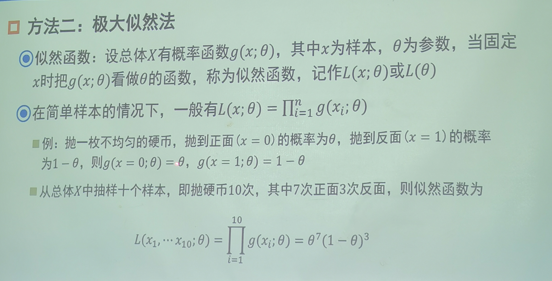 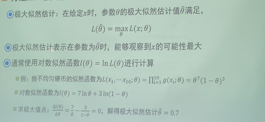 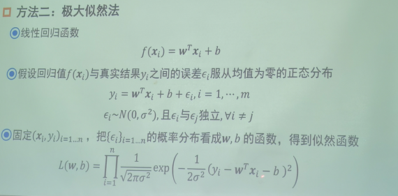 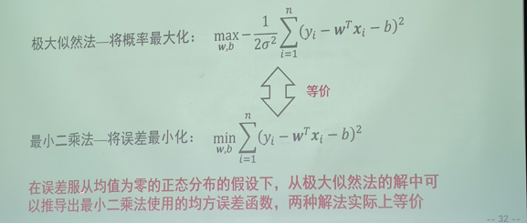
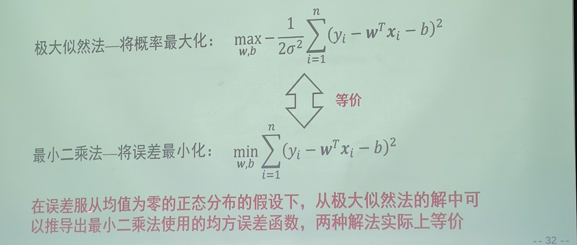
这里需要做一些更正：这里正态分布的假设和我们推导的普遍性矛盾的原因是我们误差函数使用的是均方误差即欧式误差，如果使用柯西距离则不同
非线性回归
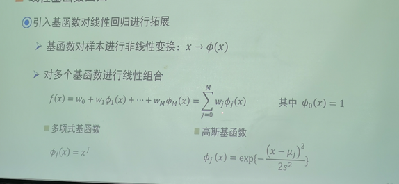
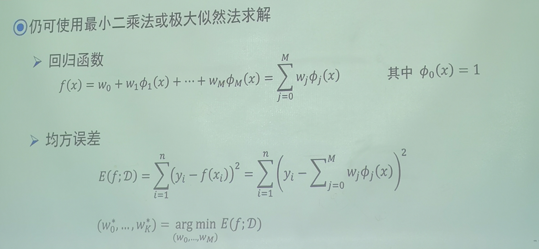
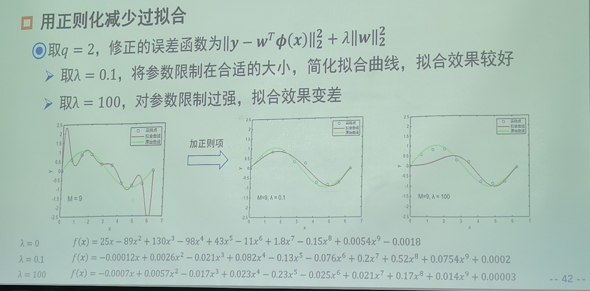
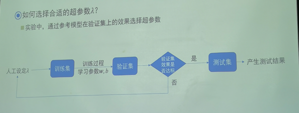
Chapter 3 分类
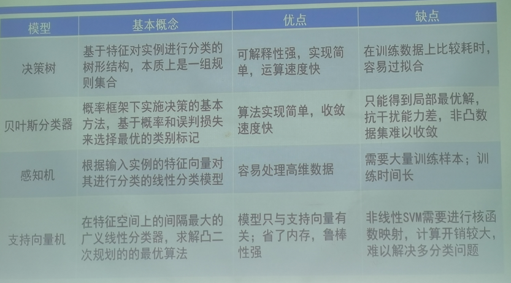
分类任务

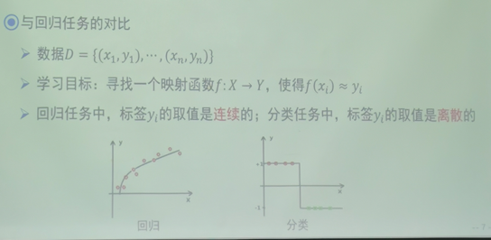
分类任务性能评价
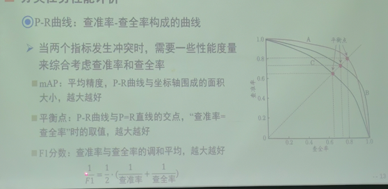非线性分类器（决策树）
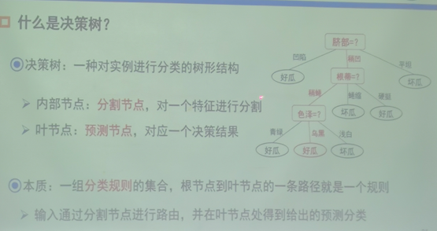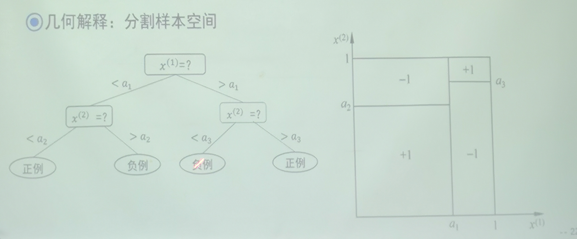
构建：通过训练样本构建一个能够判断新样本的决策树
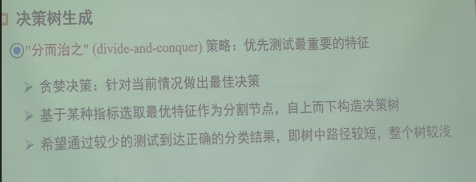
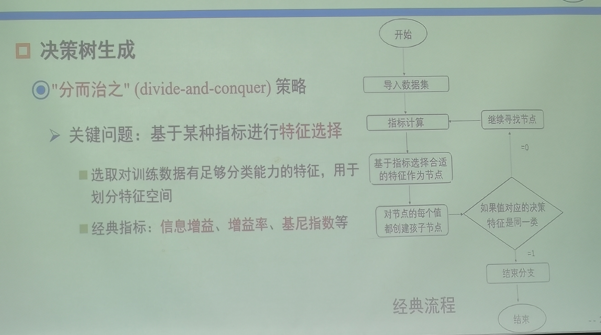

 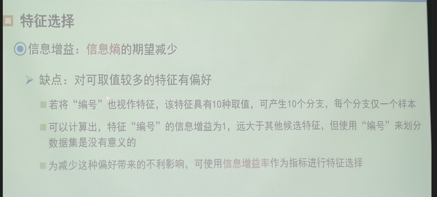
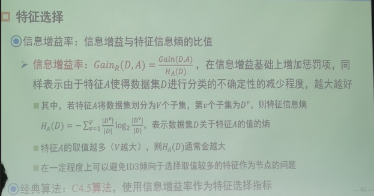
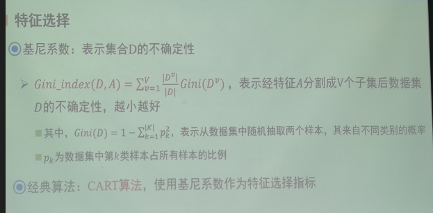
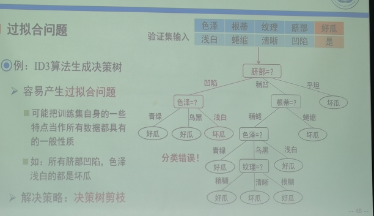
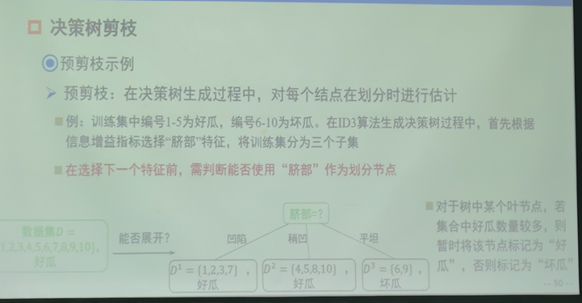
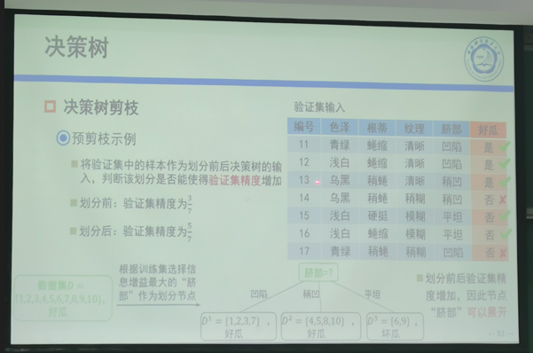
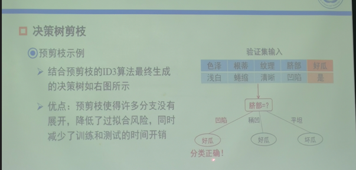
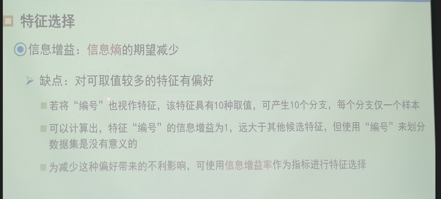
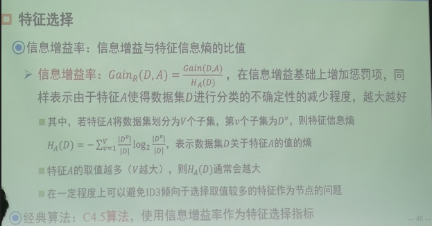
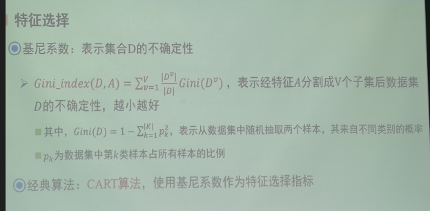
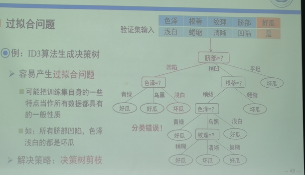
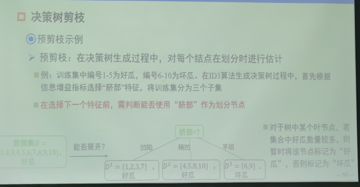
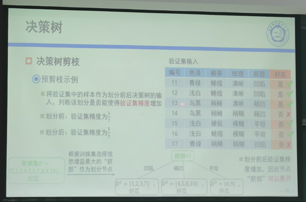
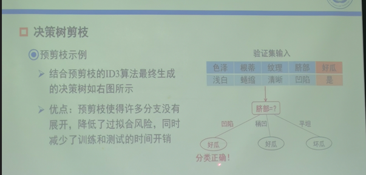
线性分类器 （贝叶斯）
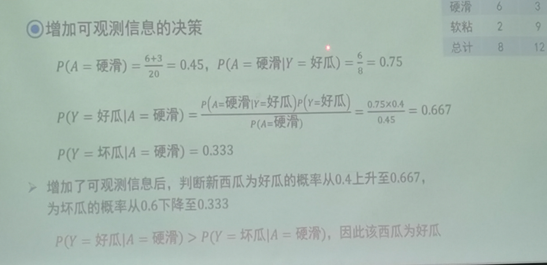
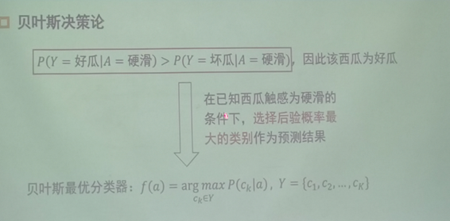
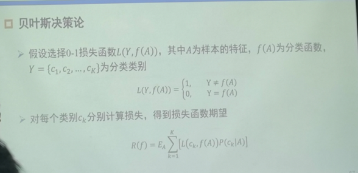
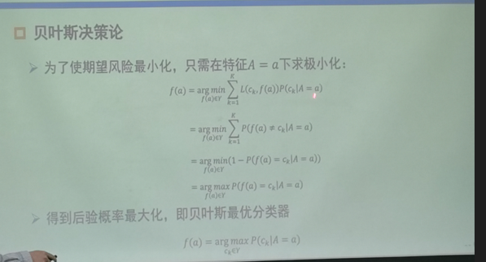
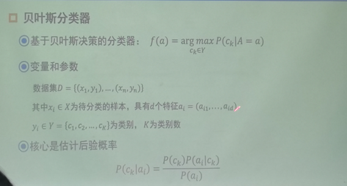
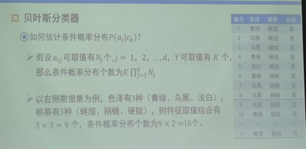
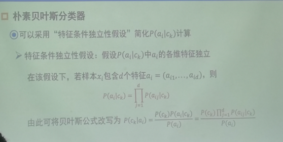
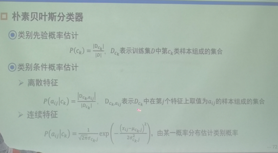
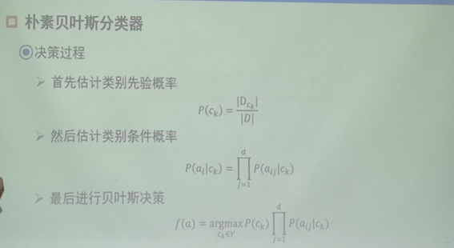
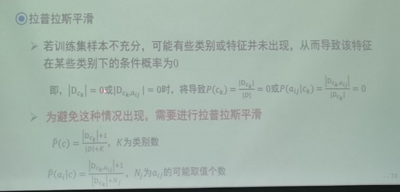
感知机——线性
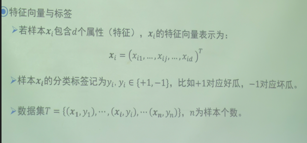
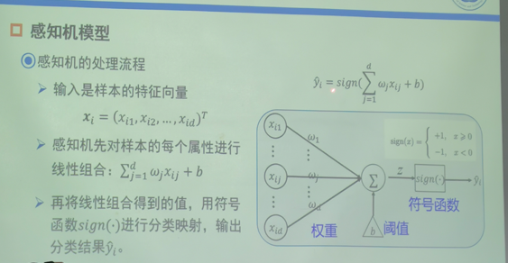
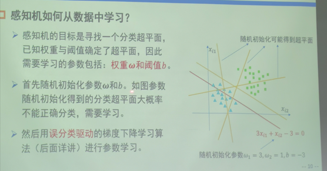
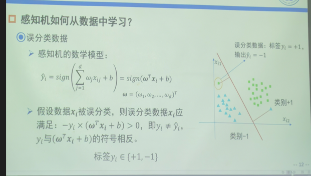
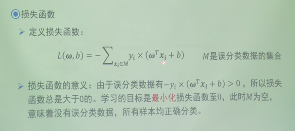
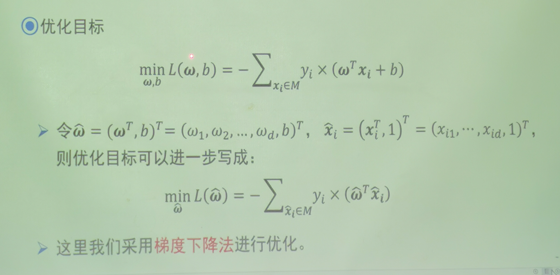
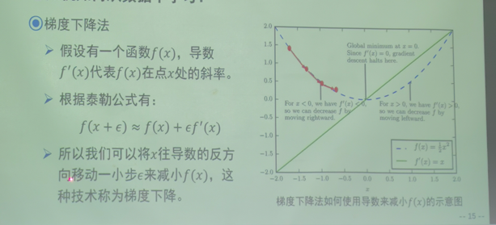
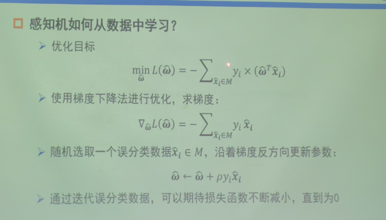
SVM
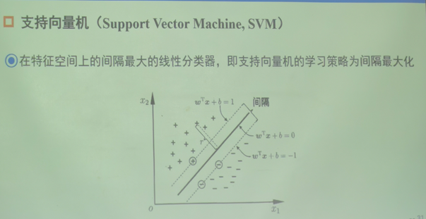
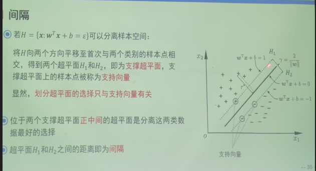


Chpater 4 聚类
Chapter 5 降维

Chapter 6
Chapter 7
评论